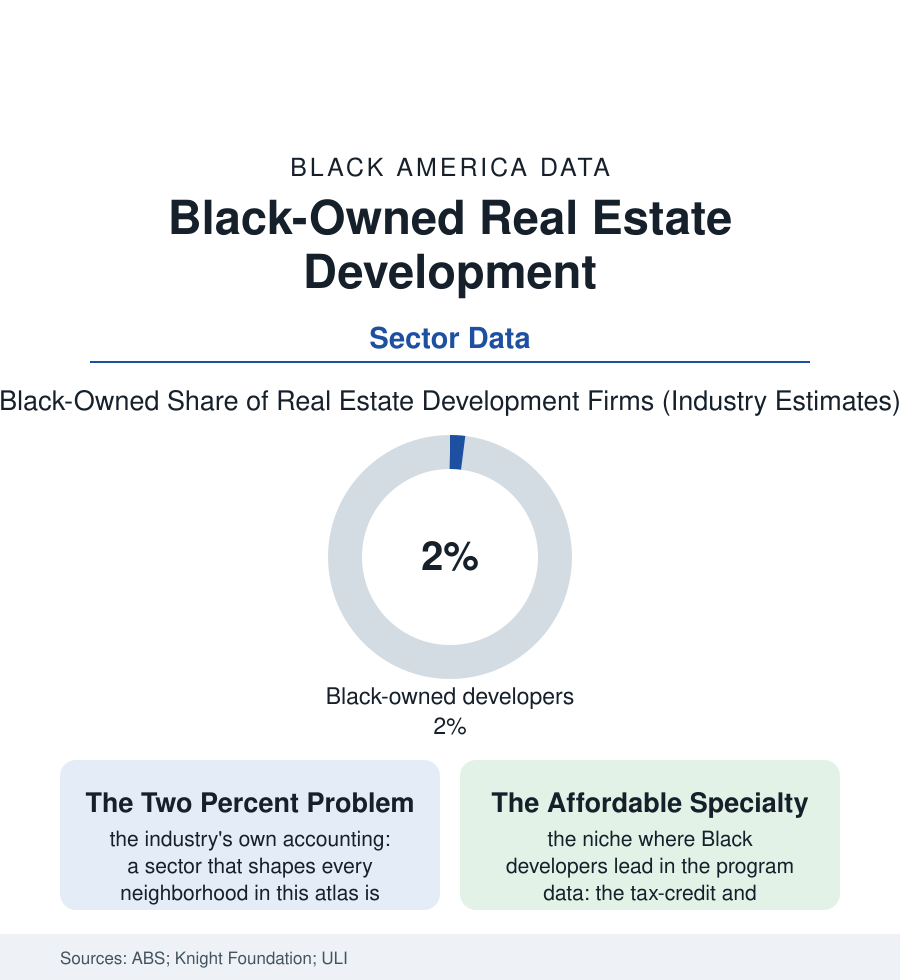

Black Business
The Developer File: Black-Owned Real Estate Development Firms
Developers decide what gets built and who it is for — and Black firms hold about two percent of that industry, with a pipeline pointed at the neighborhoods that need it most. The developer file.

Every neighborhood in this atlas was, at the decisive moment, somebody's development decision — a pro forma approved, a parcel assembled, a use chosen — and the industry that makes those decisions is among the whitest at the ownership level in the American economy: Black-owned firms at roughly two percent of real estate development. This article reads the developer file.
The Capital Stack's Gate
Development is the business section's steepest ladder because its raw material is other people's money at scale: the project is assembled from the equity check, the construction loan, the tax credits and abatements of the public shelf, each gate kept by institutions whose own files in this atlas are written (the lending file's terms, the appraisal file's numbers, the network file's introductions) — so that the Black developer's two percent is best read as the compound interest of every other gap in the book, applied to the industry where the checks are largest. The industry research quantifies the friction in its own units: the smaller average project size of minority-led firms (the track-record trap in its purest form — the résumé that qualifies a firm for the hundred-million project is a completed hundred-million project), the predevelopment costs carried personally (the architect's fees and the option money spent before the first gate opens, the developer's own balance sheet as the project's first casualty when a deal dies in committee), the equity relationships that are, in the candid trade literature, substantially inherited and social. What gets built under that arithmetic is the file's second datum: the Black developer's portfolio tilts, in the program data, toward the work the giants disdain — the affordable and mixed-income projects on the tax-credit shelf (whose compliance stacks and thin fees deter the volume builders), the neighborhood-scale retail and the faith-adjacent projects, the reclamation of the corridors the cities file maps — work whose social return the community banks and whose financial return keeps the firms one tier below the skyline work, the 'community developer' classification functioning, as in the CTE file, as both honor and ceiling.
The history shelf deserves its footnote, because the industry has one: the Black developers of the earlier record built at scale when the gates allowed — the insurance companies' real-estate arms of the business file's golden age assembling whole neighborhoods, the postwar builders of the Levitt-file era constructing the Black suburbs of the housing chapters (the developer of more than one all-Black subdivision standing in the record as both entrepreneur and indictment of the market that required him) — proof, in poured concrete, that the two percent measures the gates and not the gift.
The Pipeline Being Built
The correction era is legible in the recent data across three channels. The capital channel: the dedicated funds and the CDFI equity products of the finance file aimed at the predevelopment and equity gaps by name (the foundations' program-related investments, the Black-led development funds of the 2020s' founding wave, the pension and endowment allocators' emerging-manager programs writing first checks into the track-record trap). The public channel: the cities' own disposition and procurement shelves (the public land RFPs with developer-diversity scoring, the set-aside and joint-venture requirements of the big public projects — the stadium and station deals of the cities file carrying mandated partnership percentages that have made the established Black firms the industry's most sought joint-venture partners, a market position with its own documented ambivalence in the trade press). And the human channel: the developer-training pipelines (the university and nonprofit programs graduating cohorts of first-time developers on community-scale projects, the ULI and industry mentorship structures) reproducing, for development, the pattern this atlas records everywhere — the ladder built rung by rung by institutions founded for the purpose. The two percent, in the most recent industry counts, is moving at the pace those channels compound. The skyline it will eventually share authorship of is the one the children of the cities file are already growing up under — built, in the meantime, by decisions in which their community holds two seats in a hundred, and is buying more.
Reading the Developer Data
The developer file is the business section's summit and its summary: the industry that converts capital into place, held at two percent by the people whose places are most converted by it. The census counts the firms. The renderings in the community meetings — and the names on the development teams, lengthening year by year — count the trajectory.
More in Black Business
Black-Owned Businesses: Counts, Receipts, and the Representation Gap
About 161,000 Black-owned employer firms and three million solo ventures: how the Census Bureau counts Black business ownership, where firms concentrate, and the gap between population share and business share.
Black Median Net Worth: The Wealth Gap in Federal Reserve Data
The Federal Reserve puts Black median family net worth at $44,900, against $285,000 for White families — about 16 cents on the dollar. The widest gap in economic data.
Black Buying Power: The $1.8 Trillion Consumer Economy
Black buying power is estimated at about $1.8 trillion — larger than the economy of most nations. What the figure measures, who produces it, and what it buys.
Source: U.S. Census Bureau Annual Business Survey; Knight Foundation and developer diversity research; Urban Land Institute; U.S. Department of Housing and Urban Development program data.